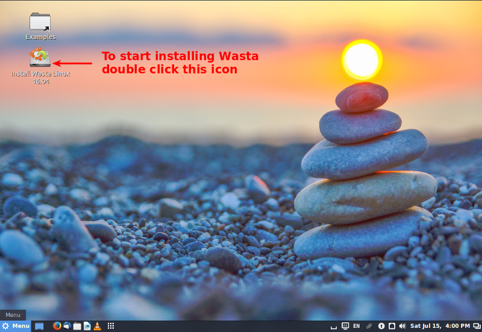
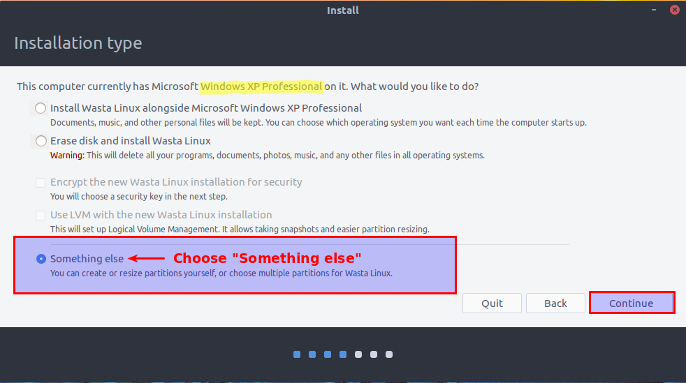
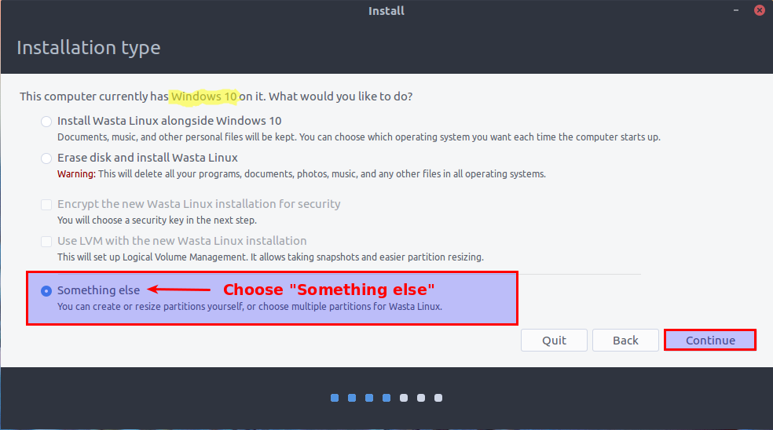
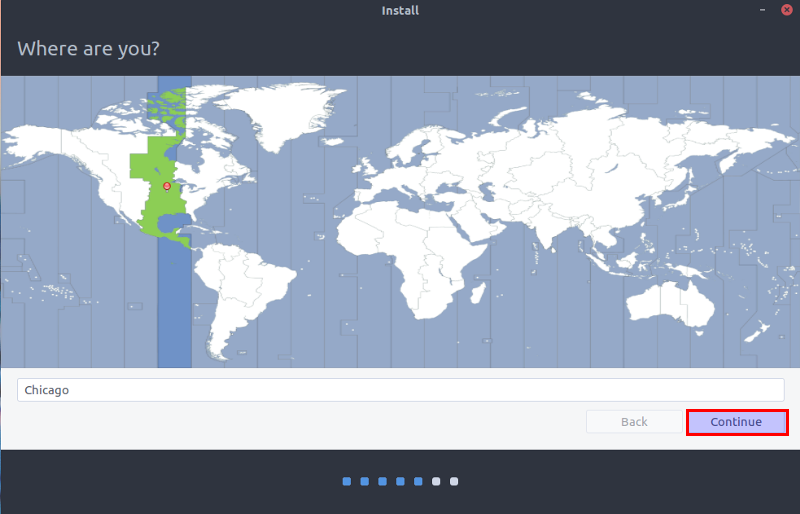
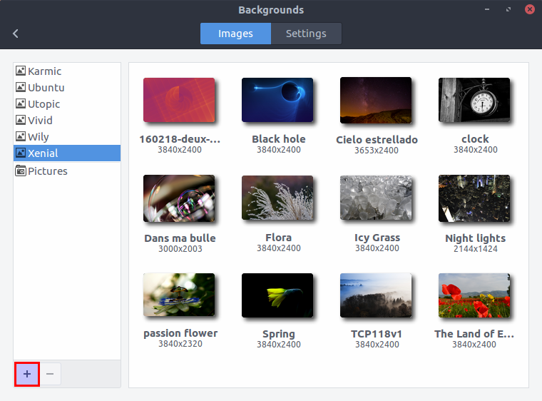

Important Note: These instructions tell how to totally replace the Windows system on a computer with a custom version of the Ubuntu Linux operating system called Wasta Linux, which is pre-configured for Bible translation work. The installation process will wipe out all data and files from the computer, so be sure that you have backed up all data that you want to save before proceeding with these installation steps. Step 8 below is where actual changes start to take place - you can abort the installation at any time before you get to the point of clicking on the "Install Now" button at the beginning of step 9.
Note: If you want to install Wasta Linux to dual boot with an existing Windows system see the document “How to install Wasta Linux to dual boot with an existing Windows system”
 This
document is an illustrated guide that shows how to remove the Windows
operating system entirely and install Wasta Linux as the only
operating system installed on a computer. It describes how to boot
Wasta from the “Live” memory stick and guides you through some
checks to ensure that your computer’s hardware is working properly
before you change anything on the computer. If you like what you see
and want to install Wasta Linux and totally replace your Windows
system, this document also shows you how to do that installation.
This
document is an illustrated guide that shows how to remove the Windows
operating system entirely and install Wasta Linux as the only
operating system installed on a computer. It describes how to boot
Wasta from the “Live” memory stick and guides you through some
checks to ensure that your computer’s hardware is working properly
before you change anything on the computer. If you like what you see
and want to install Wasta Linux and totally replace your Windows
system, this document also shows you how to do that installation.
This document is designed to be a guide for an Advisor, Consultant, or Technician with some knowledge about booting and operating systems - or wants to learn! This document describes how to make radical changes to the computer that cannot be easily reversed. The booting process for some computers can be different from other computers, so this document cannot predict all possible scenarios that might occur during the process of booting, removing the existing Windows system, and installing Wasta in its place. Hence, there is some risk that this process could turn your computer into a “brick” that can no longer boot to any operating system. That risk, I think, is small, but not zero. I think it is worth the risk, and if you also think so please proceed. The document is well illustrated with screenshots throughout. You will find it helpful if you read through the whole document before trying to execute it step by step.
It makes sense:
If you are tired of the expense and hassle of being tied to Microsoft Windows with its licensing restrictions, its vulnerability to viruses and malware, its time-consuming updates, and its encroachment on your privacy.
If you like to be able to freely share your computer system and software with others that could benefit from it without licensing restrictions.
If you want an operating system and software that is highly secure and efficient - and specially designed for the tasks that you do in your work.
If you have an older Windows XP or other Windows computer that is no longer supported by Microsoft and has become a security liability, and you want to give it new life.
A memory stick (also called “flash drive” or “thumb drive”) is a small memory storage device that can plug into a computer’s USB port (see illustration below). A “Live” memory stick installer is simply a bootable memory stick that can be used to boot a computer to the Wasta Linux system and try out Wasta Linux on the computer – without changing anything on that computer.
Booting from the “Live” Wasta memory stick enables you to try out the Wasta Linux system on your computer “before you buy” into it. When the Wasta “Live” system is shut down, no changes at all are made to the computer that booted Wasta Linux from the memory stick.

While the computer is booted to Wasta Linux, if (and only if) you decide to do so, you can actually install Wasta Linux on the computer. The memory stick has all the software resources needed to do such an installation. It is a great way to try out Wasta Linux and see how it works on your computer. If you like the Wasta Linux system, the memory stick is also the tool we can use to install Wasta Linux on the computer.
If you want to make your own Live Wasta Linux memory stick, you can prepare one from a Wasta Linux ISO image file. The Wasta ISO image files can be downloaded from the Wasta website at:
https://sites.google.com/site/wastalinux/home/download
After downloading the ISO image, it cannot be simply copied to the memory stick. It must be written to the memory stick with special software that also makes the memory stick bootable. There are a number of ways this can be done. This Wasta web page tells how to create a bootable memory stick on a Windows computer using a downloaded ISO image:
https://sites.google.com/site/wastalinux/home/create-bootable-usb
The following steps assume you have a USB memory stick containing an appropriate “Live” Wasta Linux installer that you prepared (see information above), or an equivalent memory stick installer you may have received from Bill Martin or other developer. These procedures assume you are using Bill Martin's installer which is contained on a USB memory stick labeled on the outside: "Wasta 16.04.1.1".
With the computer OFF, insert the Wasta 16.04.1.1 USB memory stick into the computer.
Unfortunately, booting a recently made computer from a USB memory stick is not as easy as it used to be. This document attempts to guide you through the steps you might have to follow in order for your computer to boot from the Live Wasta Linux memory stick. This Step 1 will describe 3 sub-steps:
Step 1a Try to directly access the Boot Menu using a special key command at boot time
Step 1b Do a SHIFT + Restart from inside Windows
Step 2c Change settings in the BIOS / UEFI
You may need to follow one, two or all three of these sub-steps to be successful in getting your computer to boot from a Live Wasta Linux memory stick. Once you successfully boot to the Live Wasta memory stick, you can proceed to Step 2 Boot Wasta to a “Live” session on the computer.
Before you turn the computer’s power on, please read the following background and hints:
To experience Wasta Linux (and later install it), it is necessary to be able to boot from the Wasta Linux memory stick. That is fairly easy to do on older computers which used a boot process controlled by its “firmware” known as a “Basic Input Output System” or BIOS for short. Most Windows computers sold today are shipped with Windows 10, and have newer type of boot process controlled by its “firmware” that is called “Unified Extensible Firmware Interface” or UEFI for short. Linux can handle both booting processes, but the “Secure Boot” feature of UEFI equipped computers can make it more difficult (or impossible) to boot the computer from a memory stick. On UEFI equipped computers you typically have to first make some changes to the computer’s UEFI settings that control the boot startup process. But, even gaining access to the BIOS / UEFI settings on Windows computers can be challenging, because computer manufacturers don’t have a standard way to access the BIOS or the UEFI system.
On many older computers (with Windows XP or Windows 7) the first power-on screen will tell what keys can be used to get into a boot order menu or the setup menu. You want to get into the boot order menu so that you can tell the computer to boot from the USB memory stick (or USB HDD) instead of from the computer's main hard drive.
Sometimes there is not much time during which you can press F2 or F12 function key at the time the computer first starts up. You may need to press the computer's power button to ON with the finger of one hand, and immediately have a finger of the other hand pressing on the special key command to access the boot order menu – all before Windows itself starts to boot. The proper key to press to interrupt the normal boot process varies with different computers. It is often the F12 function key, but it could be Esc, F8, F9, F10, F11, F12, or even the Enter key (see list in Step 1a below).
On many newer computers (with Windows 8.x or Windows 10) the computer is set to “Fast Boot” or “Quiet Boot” making it impossible to access a boot menu before Windows boots up. You may have to boot first into Windows, then hold the Shift key down while making the computer do a Restart to access special booting options (see more about this Shift + Restart method in Step 1b below).
Once you are able to get the computer to boot into a special boot menu or into the UEFI / BIOS settings , you will need to turn OFF or DISABLE its secure boot setting. You will also find it helpful to (temporarily) set the boot order to allow booting from a USB drive as a higher priority than booting from the computer’s internal hard drive.
You may need to patiently experiment a bit - try to boot, change a setting, try to boot again, etc.
Here are some guidelines for accessing the BIOS / UEFI of a Windows computer:
When you turn on the computer look at the power on screen as the computer starts up. You may see a line of text that tells the function keys that can be pressed during start up to access the computer's Setup or to access the computer's Boot Menu or Boot sequence/device List. If you do not see any info about function keys for special startup, various computer brands may use these special keyboard commands to directly access the boot menu:
|
Brand |
Key Command |
|
Brand |
Key Command |
|
Acer |
Esc / F9 / F12 |
|
Intel |
F10 |
|
Asrock |
F11 |
|
Lenovo |
F12 / Enter |
|
Asus |
Esc / F8 |
|
Microsoft Surface |
Volume up + Power for 5 seconds* |
|
Compaq |
Esc / F9 |
|
MSI |
F11 |
|
Dell |
F12 |
|
Packard Bell |
F8 |
|
Fujitsu |
F12 |
|
Samsung |
Esc |
|
Gigabyte |
F12 |
|
Sony Vaio |
F11 |
|
HP |
Esc / F9 |
|
Toshiba |
F12 |
* On the Microsoft Surface and Surface Pro you have to press and hold the volume up button located on the left side of the device, and press and hold the power button for 5 seconds located on the top of the device. Release the power button after 5 seconds but continue to hold down on the volume button until you see BIOS/UEFI settings screen appear.
If you succeed at accessing the computer's boot menu directly using a key commands shown above, then select the device you want to boot from by highlighting the device in the boot menu, and pressing Enter to boot immediately from that device.
Here is a sample boot menu screen shot for a Lenovo X140e laptop (accessed directly with F12 key):

In the above illustration, the second device in the list - USB HDD: SanDisk Ultra - is the memory stick that is plugged into the computer. If, after using the down arrow key to move the highlight to that device, and pressing Enter, the computer successfully boots from the Wasta Linux “Live” memory stick, you can skip to Step 2 below.
If you cannot directly access the boot menu using one of the key commands shown above, you can try to directly access the BIOS / UEFI settings using one of the following special function keys:
|
Brand |
Key Command |
|
Brand |
Key Command |
|
Acer |
F2 / Del |
|
Intel |
F2 |
|
Asrock |
F2 / Del |
|
Lenovo |
F1 / F2 / Enter / Ctrl + Alt + F3 |
|
Asus |
Del |
|
MSI |
Del |
|
Compaq |
F10 / F1 / F2 / Del |
|
Pegatron |
F2 / F10 / Del |
|
Dell |
F2 |
|
Samsung |
F2 |
|
Fujitsu |
F2 |
|
Sony Vaio |
F1 / F2 / F3 |
|
Gigabyte |
Del |
|
Toshiba |
F1 / Esc |
|
HP |
Esc / F1 / F2 / F10 / F12 |
|
|
|
If the special key listed above works to access the BIOS / UEFI of you computer, then skip down to Step 1c below which tells what boot and system settings to change in order to successfully boot off the Wasta Linux memory stick (and install Linux). If you still can't access the computer's settings or boot sequence with the measures described above, then try following the advice in Step 1b below.
If you don't see a line saying what function keys can be pressed during startup, and you cannot use one of the special startup function keys (listed in Step 1a above) to get to a boot menu, then the computer's boot settings may have been set by the manufacturer to do a “quiet” or “fast” boot. A “secure boot” setting may also have been set and will need to be disabled. These special boot options are more likely required if the computer came with Windows 10 running on it. To access the computer's BIOS / UEFI system settings and its boot menu, you may need to do the following:
* Start up the computer and login to Windows as usual.
* Access the Windows Power > Shutdown or Restart menu and select “Restart” WHILE HOLDING DOWN the SHIFT key. On Windows 10 it looks like this:
This type of restart signals to Windows that you want to reboot to a special menu. Upon restart the system will show a series of options. Select the option as shown in the illustrations shown below:
Select the Troubleshoot option. The system will then show these troubleshooting options:
Select the Advanced options. You will then see:
Select the UEFI Firmware Settings as shown above. You should now see:
Click the Restart button. Your system will restart and take you to the UEFI Firmware settings.
This Step 1c assumes you have finally managed to access the computer’s BIOS / UEFI firmware settings using Step 1a or Step 1b as described above.
The appearance and organization of the Firmware settings depend on how your computer manufacturer has designed them. There is no standard that all manufacturers follow. Within the firmware settings you should look at the various tab pages shown at the top of the settings screen. These may be labeled in various ways, but may include tabs or pages labeled with categories such as Main, Advanced, Boot, Security, Monitor, Power, Options, Save & Exit, etc. For menu driven BIOS or UEFI interfaces, your keyboard’s arrow keys are used to access and enter menus. The settings for configuring boot options are sometimes hidden under sub menus, which you will have to explore and navigate using these keys. Special navigation keys are sometimes shown in a side panel or at the bottom of the screen.
I recommend that you write down the name of a setting along with what the setting is before you change it, and also what you change it to. That way if something doesn’t work or causes a problem on later boots, you can get back into the UEFI/BIOS and restore any setting to what it was before you changed it.
On some UEFI enabled computers, the Compatibility Support Module (CSM) may need to first be enabled or set to CSM Boot in order to turn of the computer’s firmware’s secure boot option. This setting would most likely be located on the Boot, Security, Startup or Authentication tab/page of the settings. Use the computer’s arrow keys to maneuver to the various tabs or pages in the firmware’s settings. Not all computer firmware’s have a CSM (or “Launch CSM”) setting.
If you find a CSM or Launch CSM setting move the highlight to that item, then use the keyboard shortcuts or mouse to select it and the appropriate shortcut keys to change the CSM value to Enabled. There may also be a “Boot Device Control” setting that allows you to choose from multiple options such as these: UEFI Only, UEFI and Legacy, Legacy Only. You should choose either UEFI and Legacy, or Legacy Only. The following illustration shows what these settings might look like in the Asus UEFI BIOS Utility’s Advanced Mode:
Note that the “Launch CSM” setting is set to Enabled, and the “Boot Device Control” setting is set to UEFI and Legacy. Once enabled, proceed to the “Turn off or disable Secure Boot...” section below. If you do not find any CSM setting, it may be possible to just directly turn off or disable the secure boot setting as described in the next section below.
Here is a screen shot that illustrates settings for boot options taken from a Lenovo Thinkpad computer:
In the above illustration, the Boot settings are on the firmware’s Startup tab. The “UEFI/Legacy Boot” setting was set to Both. The “UEFI/Legacy Boot Priority” was set to Legacy First. The “CSM Support” setting automatically switched to “Yes” when the Legacy First option above it was set. The last two settings were changed so that the “Boot device List F12 Option” was Enabled - to allow the boot menu to be accessible using the F12 special key at boot time. Also ensure that any “Boot Order Lock” is Disabled – to allow the boot order to be changed so that we can boot from the USB memory stick. While you are accessing the firmware setting menus, the next thing to do is to turn off or disable Secure Boot and enable Legacy Boot as described in the next section.
To try out Wasta Linux, and possibly install it, we need to boot from our memory stick. To enable booting from USB memory stick you should find the setting to turn off or disable the Secure Boot feature on the computer. The secure boot settings will most likely be found on the Boot, Security, or Authentication sections of the firmware settings. For example, on a Lenovo Thinkpad, the firmware setting for Secure Boot is on the “Security” tab as shown below:
Use the arrow keys to highlight the Secure Boot item as shown above, then press Enter. The following Secure Boot sub-menu appears:
With the Secure Boot line highlighted at left, press Enter and change the setting to Disabled.
When you disable secure boot, you also will be enabling legacy boot. Your firmware may be different. On some computers you may need to explicitly set Legacy Boot to Enabled.
Note: This AppGeeker website shows how to disable the secure boot setting for some HP, Asus, Acer and ASRock computers: https://www.appgeeker.com/recovery/disable-uefi-secure-boot-in-windows-10.html
This ASUS site shows how to disable the secure boot setting for some Asus computers: https://www.asus.com/support/faq/1013017/
This Daossoft site shows how to disable the secure boot setting for Dell computers: http://www.daossoft.com/bios-tips/how-to-disable-secure-boot-in-bios-on-dell.html
This Lenovo site shows how to disable the secure boot setting on some Lenovo laptops: https://support.lenovo.com/us/en/solutions/ht500207
While you are still in the UEFI Firmware settings, you can also try to ensure that the computer will give first priority to boot from the memory stick, and a lesser priority to boot from its own hard drive. Making this change may make it possible for the computer to boot immediately from the USB memory stick without needing to access the special boot menu at boot time.
Unfortunately, there is no consistent place in the firmware settings where the boot priority setting resides. Check the Boot tab/page first. If it is not there it could be on any tab/page including the Save & Exit tab/page. Your goal is to (temporarily) enable the computer to boot from the USB Disk Drive (or USB HDD) as a higher boot priority than the other bootable options, especially it should be set higher than the computer's own Hard Drive. The possible options are usually listed vertically, and you use the shortcut keys to move the USB option up to the top of the list. This change in boot priority can be done to (temporarily) allow the computer to boot from the Wasta Linux memory stick instead of the Windows Boot Manager. Later, after Wasta Linux has been installed, the boot priority can be set back to give priority to boot from the computer’s hard drive – which is a faster option and avoids the computer trying to boot from any memory stick that happens to be plugged in to the computer at boot time.
Use the F10 key, or appropriate method to “Save and Exit” the firmware settings. Your firmware may have a separate tab called “Save” or “Save and Exit”. The computer will immediately attempt to boot.
If you successfully set the boot options described above, and set the boot priority to boot from a USB memory stick you should see the Wasta “Live” session menu on the screen – skip to Step 2 below.
If Windows continues to boot instead of booting Wasta from the memory stick, you probably did not hit the special boot key quick enough. Restart and try pressing the special boot menu function key at the beginning of the boot process. The image below shows the Lenovo’s boot menu when successfully using the F12 key to access the Lenovo’s boot menu at boot time:
After selecting the Wasta Linux USB memory stick (named “USB HDD: SanDisk Ultra” above), the Wasta “Live” session boot menu should appear – see Step 2 below.
When the initial boot sequence has successfully recognized the USB drive, it will show the Wasta-Linux 16.04.1.1 boot options menu that appears similar to the following:
The first menu item “Live – boot the Live System” is the default selection, and will be automatically selected at the end of a 10 second countdown. You can speed up the action by simply pressing the Enter key. The boot process will continue for a few minutes as it loads the system from the memory stick:

After the computer has booted to your "Live" Wasta Linux session your computer is actually running Wasta Linux instead of Windows. The Wasta Linux desktop should look like this screen shot below:

While the "Live" session of Linux is booted, your computer is running Linux entirely from the external USB memory stick- no changes have been made to the computer's own operating system at this point, and no changes will be made to it - unless you decide to actually install Wasta on the machine. Remember: Since the system is running from the memory stick, its performance will be slower than a normal Wasta installation.
While the “Live” session is running, you can explore the Linux system and try out various programs. You will especially want to check out whether Linux has detected the computer’s hardware and ensure that the Linux system has assigned the proper Linux drivers for things like the screen display, wireless network connections, keyboard, sound, mouse, etc. You should check out the screen appearance – that its brightness is OK and the display’s resolution is set to the machine's normal setting.
If the screen brightness looks too dim, you may need to use a function key to adjust screen brightness. Sometimes Lenovo laptops initially boot with screen brightness turned down. If this is an issue look at the little images on the function keys. For example, on Lenovo T430 laptops, holding the Fn key down and pressing the F9 function key increases screen brightness (Fn + F8 decreases screen brightness).
To check the screen display click on the main Menu, then click on the Preferences category, and click on the Display item:

The Display applet will appear:
Check the "Resolution" and ensure that it is set to the normal resolution of your computer’s screen display. You can click on the drop down list, and adjust the resolution if necessary. Dual or multiple monitors are also supported.
Check out other things too, such as the ability to connect to any wireless network that the Windows system was using when booted to Windows. If the Windows computer was using wireless to connect to a network, see if the wireless signal is detected by clicking on the network connections icon in the lower right part of the panel (task bar):
Locate your wireless network’s name in the list and click on it (mine is ‘asiu taso’ as shown above). A secured network (with padlock icon) will ask you to enter its key the first time you connect:
Enter the password/key for the wireless network. You can click the check box next to Show password to make the typing of a complicated password easier. Click on the Connect button. After a few seconds check to see if the wireless connection was made. You may see a notification at the top of your screen.
Once it connects, the network connection icon changes to show a wave signal (see the panel icon in the red box below). You can also click on the connections icon again and see whether the connection has been established (indicated by the white dot next to the network name and an indication of the signal strength to the right of the name – see the illustration below):

Once your wireless network connects to the Internet, you can try it out by running Firefox and checking to see if you can load an Internet website:
You might also want to check other hardware items such as your computer’s sound system. You can test your sound system by going to the Sound applet in the Preferences category of the main Menu:

The Sound applet will appear:

With the above Sound applet you can your computers sound abilities. On the Output tab, select your computer’s sound device (if it has multiple devices) and check the sound output by clicking on the Test sound button, which bring up this speaker test dialog:
The speaker arrangement may vary depending on your computer’s sound system. You can click on the Close button to close the speaker test.
Note that there is a volume control among other sound settings in the sound applet. There are also tabs at the top of the main Sound dialog (see above), that you can use to test your Output (speakers), Input (microphone) and various Sound Effects on other tab pages of the applet. When you are done playing with the Sound applet close its window.
Go to Menu and type system info into the search box at the top of the menu, and select the System Info application that appears in the list:

The System Info applet appears:

Write down the amounts reported for Memory and Hard Drives, as this information will be good to have handy later during the actual Wasta installation. In the above case it shows we have about 4GB of Memory and a 100GB Hard Drive.
Feel free to experiment and try out various programs that are listed in categories in the main Menu at the lower left corner of the desktop (similar to the Windows Start button). When you hover your mouse over a menu item, a brief description of that item will appear in the lower right part of the menu. Test out creating a document with LibreOffice Writer (in the Office category). If you computer has a web camera, try it out with the Cheese application in the menu’s Sound & Video category. Check out the applets in the Accessories and Preferences categories. Remember: during a live session no changes are made to your computer, so any changes or documents you create in this live session will not be saved.
The remainder of this document describes how to install Wasta Linux on your computer.
Note that Steps 4 through 7 below are non-destructive installation steps. You can feel free to proceed down through the first part of step 8 below. Nothing will be changed on your computer if you opt to Quit before you get to the last part of step 8 below (clicking on the Install Now button).
The first step is to double click the "Install Wasta Linux 16.04" desktop icon (the red arrow is pointing at this icon in the image below):

Wait for first install wizard window to appear. It will be for selecting the language for the installation and looks as follows:

English is usually the default selection. Click Continue. The next screen appears.
If your computer has an active wireless connection – but not yet connected - the installer may ask you if you want to connect the computer to the wi-fi network:

If you wish to you can select the Connect to this network button, select the name of your network in the list, and enter your network’s security password in the Password box. But, a connection to your wireless network is optional, and being connected to the Internet is not required during the installation. So, you can also leave it set to the default “I don’t want to connect to a wi-fi network right now” - especially if you have slow or expensive Internet. You can connect after installation (or use a full wasta-offline mirror to update your software). If you wish to connect now you can do so as you did in Step 3 above when you played around with the Live system. In either case, then click Continue when you are ready to move on to the next step.
Next a Preparing to install Wasta Linux screen appears offering to download updates and third-party software while installing:

We will not install these updates and third-party software during the initial installation. You can do updates after installation, so just leave the check boxes un-ticked, and click Continue.
The next install wizard page wants to know how you want Wasta Linux to be installed on the computer, especially in relation to any existing operating system such as Windows - or a previous Linux installation(s). The appearance of this dialog will vary depending on what operating system(s) are already on the computer. We are assuming here that some version of Windows is on the computer.
The Installation type dialog will look similar to one of the dialogs shown below – depending on the version of Windows that is resident on the computer. Regardless of the type of Windows system on your computer, we will always elect to do a manual partitioning of the hard drive – which is always going to be the last option called “Something else” in the Installation type that is presented to you.
Therefore, if you are installing Wasta Linux:
to replace Windows XP, proceed with the Windows XP section below
to replace Windows 7, 8 or 8.1, skip to the Windows 7, 8, or 8.1 section
to replace Window 10, skip to the Windows 10 section
The Installation type dialog will look similar to one of the dialogs shown below – depending on the version of Windows you are replacing:

The first option is often pre-selected, but you should choose Something else instead. Click Continue. Click Continue and skip down to Why do we choose Something else?

The first option is often pre-selected, but you should choose Something else instead. Click Continue. Click Continue and skip down to Why do we choose Something else?

The first option is often pre-selected, but you should choose Something else instead. Click Continue.
It is possible to install Wasta Linux using one of the other Installation type options, but this documentation suggests choosing Something else for the following reasons:
The Something else option allows us to have your /home directory on a separate partition. Having /home on a separate partition makes it easy to upgrade to a newer version of Wasta (or other kind of Linux) in the future without touching any of your documents, data or settings.
The Something else option allows us to choose the size and arrangement of the partitions that will be created on the computer’s hard drive.
Different versions of Windows come with different numbers and kinds of partitions. By selecting Something else, we can ensure that we remove all the existing Windows partitions, and partition the hard drive more efficiently.
While the first couple options in the above dialog may vary depending on how your Windows computer is set up, the last option for any installation will always be Something else. The Something else option therefore allows us to standardize this document, and reduce the number of possible variations and gotchas that might happen if we tried to describe one of the other options.
We are not planning to encrypt the new Wasta installation, nor use the Logical Volume Management (LVM) system. The use of these technologies is not necessary in most environments. They are more complicated to set up at installation time and so are beyond the scope of this document.
Note: The Installation type dialogs shown above may differ a little from what you see on your particular Windows computer, but the last option "Something else" should always be available and is the one you should select to follow this document. After selecting Something else, click Continue.
The installation program uses a partitioning program to show you a graphical display of the existing partitions that are on the computer's hard drive. Its appearance and the number of partitions displayed in the dialog will depend on what partitions currently exist on the computer. You will want to study the graph showing on your screen, and the information displayed on it carefully.
The point of no return is the Install Now button at the bottom right of this installation page. Do not click on that button until the end of Step 8. Our actions in removing Windows partitions and adding Linux partitions are only simulated until we get them just the way we want them. We can adjust them over and over again without making actual changes to your computer. At any time you can call it quits by clicking on the Quit button – and no changes will be made to your computer. Again, don’t click on the Install Now button until you are ready for the changes to be made on your computer (at the end of Step 8 below).
Before we proceed to the "Install Now" action, we need to remove the existing Windows partitions. A Windows 10 computer, for example, will have two or more partitions on it so that its partitions might like similar to the following:
Look carefully at the above illustration and compare it to the partitions displayed for your computer. Note that on a Windows computer, there will often be several partitions with "ntfs" shown as their Type. All partitions with "ntfs", "fat32" or "fat" Type are Windows partitions.
Since these instructions are about totally replacing the Windows system with Wasta Linux, we will tell the installer that we want to delete the existing Windows system partitions - removing them one by one.
Select the first ntfs partition (device /dev/sda1) and click the minus button to remove it:
The display will dynamically change to show the state of the partitions after each action:
The partition was removed and it is now “free space” as shown above.
Next, select the remaining ntfs partition (device /dev/sda2) and click the minus button to remove it as shown below:
Again the display dynamically changes to show the state of the partitions:
Repeat the above action for any remaining Windows partitions showing for your computer.
At this point the Windows partitions (ntfs, fat32, fat) should have all been removed and the hard drive (device sda) should only have free space on it as shown in the illustration above.
We want to now start adding the Linux partitions to the free space. We will add three partitions, one at a time:
A Linux root (/) partition with a size of 15GB (15000MB)
A Linux swap partition with a size of 4GB (4000MB)
A Home partition (/home) with the remainder of the free space
The first partition we want to add is the Linux root (/) partition with a size of 15GB or 15000MB.
Select the free space line in the dialog, and click the plus button to add a new partition:
The installer needs to know some details about the first new partition, so it pops up an overlay dialog to get that information as shown in the illustration below:
The value in the Size box will vary depending on the size of your hard drive. The size is in MegaBytes (MB), so for GigaByte considerations, we need to think in terms of thousands of MB. The first partition we are creating will be for the Linux root file system. Generally 15GB should be enough disk space for the file system root. 15GB is 15000MB, so type 15000 into the Size box:
We can leave the type of partition set as “Primary”, and its location at the “Beginning of this space”. The “Use as” drop-down selector can also be left as “Ext4 journaling file system”. The last setting for this partition is its “Mount point”. Click on the down arrow at the right end of the Mount point drop-down selector and select the / item at the top of the list as shown below:
The settings for our root (/) partition are now complete. Check that your settings look like this Create partition dialog below:
Double check to ensure that the following 5 settings are set:
1. The Size is set to: 15000
2. The Type for the new partition is set to: Primary
3. The Location for the new partition is set to: Beginning of this space
4. The Use as selector is set to: Ext4 journaling file system
5. The Mount point is set to: /
Click the OK button. The display will update showing your new root partition planned for installation:
Note in the above illustration that the installer made the device name of the new partition sda1. It also auto-adjusted the best size for the partition to be 14998 MB – close to our specified 15000, and it shows the remaining space to be 86270. In my illustration I’m using a relatively small approximately 100GB hard drive (100000MB). The remaining space on your computer is likely to be much larger.
The second partition we want to add is the Linux swap partition with a size of 4GB or 4000MB. A swap partition is a special partition that Linux can use to swap out some of its RAM memory if it needs to.
As with the first partition, we add a second partition to a portion of the free space, so select the free space line in the dialog, and click the plus button to add a new partition as shown in the illustration below:

The installer needs to know the details about the second new partition and shows the Create partition overlay dialog to get that information as shown in the illustration below:
A swap partition is a special partition that Linux can use to swap out some of its RAM memory if it needs to. It is generally recommended to have a swap partition that is at least as large as the amount of RAM memory in the computer. When we ran the System Info applet, it showed that we had about 4GB of memory. So, here we adjust this swap size 4GB which is 4000 in MB. Also you can set the “Type for the new partition” to Primary if it is not already set to Primary. We will leave the “Location for the new partition” at Beginning of this space. Click on the down arrow of the “Use as” selector and set it to swap area as shown in the illustration below:
The settings for our Linux swap area partition are now complete. Check that your settings look like this Create partition dialog below:
Double check that the 4 settings are set as follows:
1. The Size is set to: 4000
2. The Type for the new partition is set to: Primary
3. The Location for the new partition is set to: Beginning of this space
4. The Use as selector is set to: swap area
The swap area does not have a mount point.
Click the OK button. The display will update showing your new swap area partition:
Note in the above illustration that the installer made the device name of the new partition /dev/sda2. It also calculated the best size for the partition to be 4000 MB, and it shows the remaining space of this hard drive to be 82270. In my illustration I’m using a relatively small approximately 100GB hard drive. The remaining space on your computer is likely to be much larger.
The third and final partition we want to add is the Linux /home partition. The /home partition is where all your user generated files will be stored including your Documents, Music, Pictures, Videos, Downloads, Desktop files, and all of your user settings including settings for the applications you will be using. For our /home partition we want to use up the remaining free space.
As you have learned from the above procedures, first we select the free space line in the dialog, and click the plus button to add a new partition as shown in the illustration below:
The installer needs to know the details about the third (and final) partition and shows the Create partition overlay dialog to get that information as shown in the illustration below:
For our /home partition we want the system to use all the free space that is left, so leave the value that appears in the “Size” box on your computer unchanged. It will be the maximum space that is left on the hard drive. Mine shows 82271 MB, but your should be much larger – leave it at its maximum value. Set the “Type for the new partition” to Primary if it is not already set to Primary. We will leave the “Location for the new partition” at Beginning of this space, and leave the “Use as” value set to Ext4 journaling file system. Click on the down arrow of the “Mount point” selector and set it to /home as shown in the illustration below:
The settings for our Linux /home partition are now complete. Check that your settings look like this Create partition dialog illustrated below:
Double check that the 5 settings are set as follows:
1. The Size is set to: your maximum space left
2. The Type for the new partition is set to: Primary
3. The Location for the new partition is set to: Beginning of this space
4. The Use as selector is set to: Ext4 journaling file system
5. The Mount point is set to: /home
Click the OK button. The display will update showing your new /home partition:
Note in the above illustration that the installer made the device name of the last partition /dev/sda3.
Things to note:
We had the installer partition the drive to use all the remaining free space.
There are check boxes next to the root partition (/), and the /home partition, indicating that those partitions will be formatted during the installation process. Since this is a new installation of Linux on this computer, all partitions will be formatted including the /home partition. If we were re-installing Linux or upgrading to a newer version of Linux on this computer, its /home partition would NOT be formatted by default – leaving any data on the /home partition untouched. The Linux installer won’t automatically format any existing Linux /home partition.
The "Device for boot loader Installation" selector should show the computer's main hard disk (usually /dev/sda) with the hard disk's known capacity shown in parentheses.
Make sure the settings and partitions are set according to the above information. The next action will destroy all data that is already on the computer including the whole Windows system. If you don’t want to continue click the Quit button.
The installation will start and present you with some configuration screens while the system does the partitioning, formatting and installation of the Wasta Linux system. The first configuration screen will be the “Where are you?” screen that looks like this:

Click on the general area of the world map where you are located. For Manus users, the time zone that includes PNG should be highlighted, so that "Port Moresby" shows on the time zone selected.
Click Continue.
The next configuration screen is the keyboard layout screen which looks like this:

Click Continue to use the “English (US)” keyboard as default, unless you have a different keyboard layout on your computer.
The next screen is the “Who are you?” screen which appears as illustrated below:

Fill in the requested information and password:
Type your name in the top box.
The computer’s name is the name that it will have on any local network.
The username you type in will be used at the name of your user folder in the Home directory.
It is smart to use a good password – one that you can remember.
You should keep the button selected “Require my password to log in.”
Click Continue. The installation process does not require any additional input from you. The installer will display a little slide show that describes some of the features available in (Ubuntu) Linux. The installation progress is displayed in the bar at the bottom of the slides. Most installs take less than 30 minutes.
When the installation is finished a dialog will appear that looks like this:

Click on the Restart Now button. As the computer shuts down you will see:

Remove the memory stick at the prompt and press Enter to reboot the computer.
Each time you boot into your Wasta Linux system, you will need to type your password into the login box. Your login password is the password you set during the installation. The same password is also used when you do administration tasks such as installing software:

If the prompt inside the login box asks for your Username, you can type it in, or click on the user name with a mouse to get the Password prompt.
Once the system has started up, and you have logged in, you can set the background image: Right-click on the desktop and select “Change Desktop Background”. The Backgrounds applet will appear:

You can select a stock picture from one of the Linux distributions by selecting the distribution name in the left panel. Alternatively, you can select a Background image from your Pictures folder. You can load a different folder by clicking on the little + button to add a folder of pictures to the selection list.
For the Manus computers, navigate to open the “Pictures” folder. Then, double-click on the "manus_jaha_background_images" folder. This folder has 30 Manus-Jaha backgrounds. Select the one that agrees with the N number used in the user name above. Scroll down in the background pictures to select the appropriate background picture. Select Advanced and from that drop down list choose the “Stretched” option to make the Manus-Jaha image fit the screen.
While most software and resources are immediately available for use, some programs like Paratext and Adapt It will need additional setup and configuration.
The Paratext registration information will need to be entered for the specific user of the computer. Paratext will also need to have its projects created, and if used in collaboration with Adapt It, Paratext will need the following projects setup as a minimum for collaboration with Adapt It:
* A source language Paratext project - containing the Scripture books imported into the Paratext project that will be used in Adapt It as source text for adaptation work.
* A target language Paratext project - containing Scripture books created as empty books (i.e., "empty" but containing chapter and verse numbers when created within Paratext). This initially “empty” project will be used in Adapt It as target or translation text for adaptation work, and will be transferred automatically to Paratext each time the adaptation document is saved within Adapt It.
Adapt It can be configured to collaborate with Paratext, but the necessary Paratext projects need to be created first (see above). Once the Paratext projects are created for the source language and target languages, an administrator can make the "Administrator" menu visible within Adapt It, and use its “Setup Or Remove Collaboration” menu to set up one or more Adapt It collaboration projects between Adapt It and Paratext. See the Adapt It HTML document named Help_for_Administrators.htm for more details on how to set up collaboration between Paratext and Adapt It.
Install
Wasta Linux totally replacing Windows